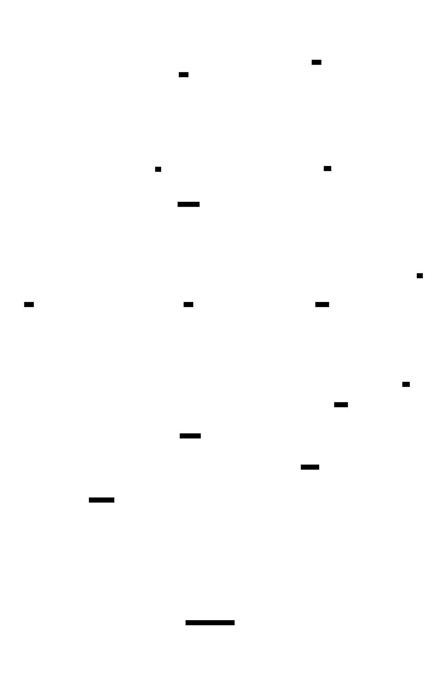

Exploring Our Technology Stack
TL;DR:

After dedicating a year of diligent effort, our backend infrastructure has reached a level of maturity that allows us to share our tech stack with you.
Traffic
In the traffic view, we utilize APISIX as our API gateway, which proxies all the traffic to our microservices.
Our microservices are written in Golang and built using the Kratos framework. We rely on etcd as our configuration center and application registry.
Our databases are diverse and include MySQL, PostgreSQL, InfluxDB, and Redis, each serving a different purpose:
MySQL: Used for traditional business operations.PostgreSQL: Acts as a MySQL successor and stores processed timeseries data for high-speed access.InfluxDB: Stores the original timeseries data.Redis: Serves as a cache and is also used for leaderboard functionality.
Observerability
In terms of observability, we have opted for OpenTelemetry in combination with the Uptrace tool to collect traces, metrics, and logs. However, we found that the log support in Uptrace is not satisfactory. As a result, we decided to use Loki as a cost-efficient and sufficient solution for log management. Loki is part of the Grafana stack, and since we already had Grafana installed, we discovered its excellent capabilities for data visualization. Therefore, we utilize Grafana to explore our data in databases.
EaseProbe
When it comes to health and status checking, our team opted for EaseProbe, owing to its simplicity and flexibility. While there are other great alternatives, such as Uptime Kuma and Upptime, which have powerful GUI, EaseProbe offers more customisation and functionality. It supports native clients and is based on a configuration file, making deployment a breeze. Additionally, it is written in Golang, which makes it easy for us to modify and add new features as needed.
DevOps
Netmaker
Microservices development can be a challenging process due to a major pain point - the need to connect both the local network and the remote container network. Without this connection, all services must be run on the local computer for debugging purposes. However, the task of joining these networks can be simplified with the use of Netmaker, an overlay networking tool.
Here are some reasons why Netmaker is a great choice:
- It uses WireGuard as its underlying tunneling technology. According to Linus, WireGuard is a work of art.^1
- Netmaker is open source. This means you can easily deploy your own server and customize it to your needs.
- While Tailscale is also based on WireGuard, its coordination server is proprietary. Although there is an alternative called headscale, it is not official.
SOPS
GitOps leverages Git repositories as a centralized source for delivering infrastructure as code.^2 However, the process of distributing secrets can be a challenge. To quote directly from the SOPS README:
Automating the distribution of secrets and credentials to components of an infrastructure is a hard problem. We know how to encrypt secrets and share them between humans, but extending that trust to systems is difficult. Particularly when these systems follow devops principles and are created and destroyed without human intervention. The issue boils down to establishing the initial trust of a system that just joined the infrastructure, and providing it access to the secrets it needs to configure itself.
There are several reasons why SOPS is a preferred tool for managing secrets:
- It supports structured file formats, such as YAML and JSON, allowing for selective encryption of specific parts of the file, instead of encrypting the entire file.
- It supports a wide range of Key Management Systems (KMS), such as AWS KMS, GCP KMS, and Azure Key Vault, making it highly adaptable to different environments.
While there are other tools available, such as blackbox and git-crypt, they do not offer the same level of flexibility as SOPS. Specifically, they lack the ability to support structured file formats and a variety of KMS, making them less versatile for managing secrets.
CircleCI
Automation is also important, and this is achieved through CircleCI. Why not use GitHub Actions? Because we are out of money.
Antman
The Antman is a service written by ourselves to sync our services to APISIX and perform other notification tasks, such as handling service offline events.
Postscript
The architecture diagram has been crafted using D2, a modern diagram scripting language that turns text to diagrams. Compared to PlantUML, I think it is simpler and the layout is more comfortable. Thanks to the author.